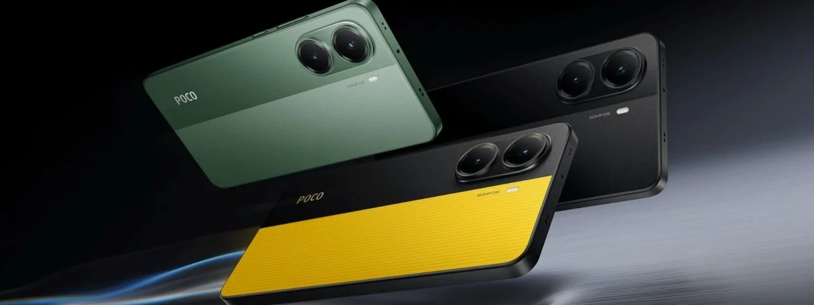

Xiaomi lança POCO X7 Pro e X7 no Brasil; veja preços
Após o anúncio global dos novos smartphones POCO X7 e POCO X7 Pro na última semana, a Xiaomi confirmou o lançamento desses dois modelos para o mercado brasileiro nesta segunda-feira (13). Em uma publicação nas redes sociais, a companhia oficializou a chegada dos produtos, já disponíveis para compra.
Os dois modelos, da categoria intermediária premium, têm especificações mais parrudas para games. No caso do POCO X7 Pro, o smartphone possui chip Dimensity 8400 Ultra, enquanto o X7 padrão utiliza o Dimensity 7300 Ultra, mas ambos possuem entre 8 e 12 GB de memória RAM e até 512 GB de armazenamento interno.
No quesito das câmeras e tela, os dois smartphones possuem as mesmas especificações. Tanto o X7 quanto o X7 Pro têm tela de 6,67 polegadas com painel AMOLED, taxa de atualização de 120 Hz e suporte a tecnologias Dolby Atmos e HDR10+. Já nas câmeras, o sensor traseiro é o IMX882 com resolução de 50 megapixels, que faz par com uma ultrawide de 8 MP, enquanto o módulo frontal tem 20 MP para selfies.
O que difere mais os dois aparelhos é a bateria, já que o X7 Pro tem 6.000 mAh com carregamento que vai de 0 aos 100% em 1h a 90W, e o X7 normal tem apenas 5.110 mAh via 45W.